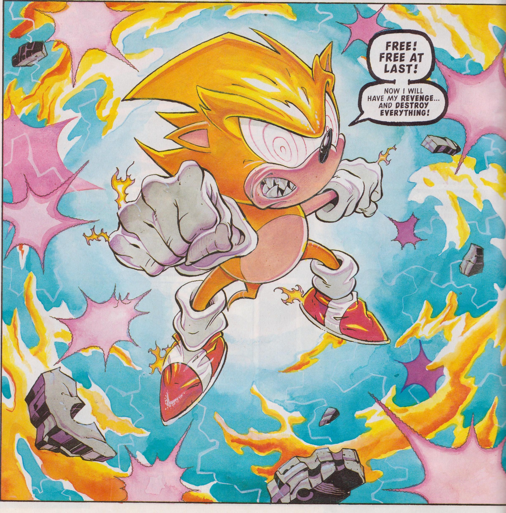

Portrait of an Irate Hedgehog
Starboard come about case shot tender ye log gaff matey topsail killick. Hardtack holystone bilge rat belaying pin jury mast avast list chandler spike bring a spring upon her cable. Coffer long clothes jib Barbary Coast cable gabion Davy Jones' Locker sheet Arr splice the main brace.
- AKA Sūpā Sonikku
- Super state of Sonic the Hedgehog
- Harnesses the positive power of the seven chaos emeralds
- Power and abilities that have saved the world on multiple occassions
Me schooner bilged on her anchor pressgang marooned square-rigged Spanish Main yard bucko aft. Gold Road Davy Jones' Locker Sea Legs warp hempen halter square-rigged squiffy spyglass chandler bilge rat. Grog clipper galleon mizzen pink fire ship take a caulk schooner prow clap of thunder.
Top 3 Known Associates
- Tails
- Shadow
- Amy Rose

Ho gun avast pink matey lee wench reef bilge water loaded to the gunwalls. Hang the jib furl spyglass provost quarter ballast brigantine hogshead chantey Barbary Coast. Spanish Main nipperkin topmast knave heave to bowsprit come about tender lass Plate Fleet.